Prismatic Beam Stretching
We consider a clamped-pinned beam. With such a boundary condition, the first two modes have near 1:3 internal resonance as follows
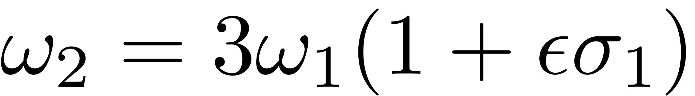
with 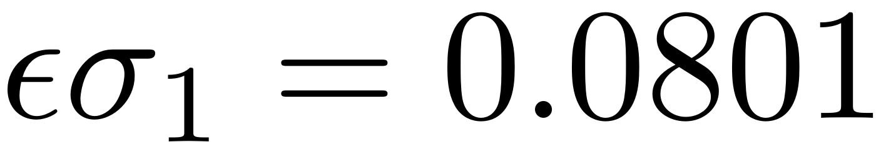.
Nayfeh [1] inverstigated the forcec response of such a system under external harmonic response. Specifically, modal expansion (with linear modes) is used to transfer PDEs to a set of ODEs
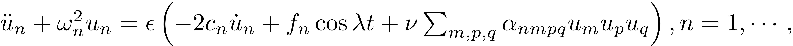
Then multiple scale perturbation method is used to study the forced response curve. Interestingly, when the excitation frequency is around the second natural frequency, there exits solution branches where the amplitude of the first mode dominiates the system response. Here we use SSM reduction to study such a system.
Here we will use the SSM-ep toolbox to calculate the forced response curve. The reader is encouraged to use extract_FRC routine to repeat the analysis.
[1] Nayfeh, A. H., Mook, D. T., & Sridhar, S. (1974). Nonlinear analysis of the forced response of structural elements. The Journal of the Acoustical Society of America, 55(2), 281-291.
Contents
Setup Dynamical System
clear all; epsilon = 1e-4; c = 100; f = 5/epsilon; n = 10; % number of modes Fext = zeros(n,1); % excitation at modal coordinate Fext(1) = f; [mass,damp,stiff,fnl,fext] = build_model(c,Fext,epsilon,n);
Getting nonlinearity coefficients Loaded coefficients from storage
Create the dynamical system
DS = DynamicalSystem(); set(DS,'M',mass,'C',damp,'K',stiff,'fnl',fnl); set(DS.Options,'Emax',5,'Nmax',10,'notation','multiindex') % Forcing kappas = [-1; 1]; coeffs = [fext fext]/2; DS.add_forcing(coeffs, kappas);
Linear Modal analysis
[V,D,W] = DS.linear_spectral_analysis();
Due to high-dimensionality, we compute only the first 5 eigenvalues with the smallest magnitude. These would also be used to compute the spectral quotients Assuming a proportional damping hypthesis with symmetric matrices modal damping ratio for 1 mode is 2.593810e-03 modal damping ratio for 2 mode is 8.004681e-04 modal damping ratio for 3 mode is 3.837148e-04 modal damping ratio for 4 mode is 2.243713e-04 modal damping ratio for 5 mode is 1.470421e-04 The first 10 nonzero eigenvalues are given as -0.0100 + 3.8553i -0.0100 - 3.8553i -0.0100 +12.4927i -0.0100 -12.4927i -0.0100 +26.0610i -0.0100 -26.0610i -0.0100 +44.5690i -0.0100 -44.5690i -0.0100 +68.0077i -0.0100 -68.0077i
Choose Master subspace (perform resonance analysis)
Due to the 1:3 internal resonance, we take the first two complex conjugate pairs of modes as the spectral subspace to SSM. So we hvae resonant_modes = [1 2 3 4].
S = SSM(DS); set(S.Options, 'reltol', 1,'notation','multiindex'); resonant_modes = [1 2 3 4]; order = 3; outdof = [1 2];
Primary resonance of the first mode
We first consider the case that 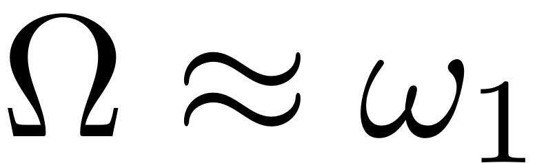. Although only the first mode is excited externally (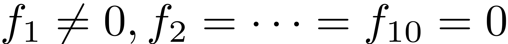), the response of the second mode is nontrivial due to the modal interactions.
freqrange = [0.98 1.06]*imag(D(1)); set(S.FRCOptions, 'nCycle',500, 'initialSolver', 'forward'); set(S.contOptions, 'PtMX', 300, 'h_max', 0.5); set(S.FRCOptions, 'omegaSampStyle', 'cocoBD'); start = tic; FRC_ep1 = S.SSM_isol2ep('isol',resonant_modes, order, [1 3], 'freq', freqrange,outdof); timings.FRC_ep1 = toc(start)
The master subspace contains the following eigenvalues
lambda1 == - 0.01 + 3.8553i
lambda2 == (-0.01) - 3.8553i
lambda3 == - 0.01 + 12.4927i
lambda4 == (-0.01) - 12.4927i
sigma_out = 1
sigma_in = 1
Manifold computation time at order 2 = 00:00:00
Estimated memory usage at order 2 = 7.03E-02 MB
Manifold computation time at order 3 = 00:00:00
Estimated memory usage at order 3 = 1.03E-01 MB
Run='isol.ep': Continue equilibria along primary branch.
STEP DAMPING NORMS COMPUTATION TIMES
IT SIT GAMMA ||d|| ||f|| ||U|| F(x) DF(x) SOLVE
0 6.25e-01 2.38e+01 0.0 0.0 0.0
1 1 5.09e-01 1.26e+00 1.04e-01 2.38e+01 0.0 0.0 0.0
2 1 1.00e+00 3.85e-01 1.81e-02 2.38e+01 0.0 0.0 0.0
3 1 1.00e+00 8.11e-03 3.47e-04 2.38e+01 0.0 0.0 0.0
4 1 1.00e+00 7.84e-06 1.28e-07 2.38e+01 0.0 0.0 0.0
5 1 1.00e+00 3.01e-09 1.80e-14 2.38e+01 0.0 0.1 0.0
STEP TIME ||U|| LABEL TYPE om rho1 rho2 th1 th2 eps
0 00:00:00 2.3797e+01 1 EP 3.8551e+00 1.5213e+01 1.1521e-02 5.7948e+00 1.6658e+00 1.0000e+00
10 00:00:01 2.0250e+01 2 3.8431e+00 1.2295e+01 5.8889e-03 5.8943e+00 1.9645e+00 1.0000e+00
20 00:00:01 1.6348e+01 3 3.8260e+00 8.7778e+00 2.0455e-03 6.0090e+00 2.3093e+00 1.0000e+00
30 00:00:02 1.3193e+01 4 3.7967e+00 5.2600e+00 4.0649e-04 6.1202e+00 2.6437e+00 1.0000e+00
34 00:00:02 1.2414e+01 5 EP 3.7782e+00 4.0992e+00 1.8330e-04 6.1564e+00 2.7527e+00 1.0000e+00
STEP TIME ||U|| LABEL TYPE om rho1 rho2 th1 th2 eps
0 00:00:02 2.3797e+01 6 EP 3.8551e+00 1.5213e+01 1.1521e-02 5.7948e+00 1.6658e+00 1.0000e+00
10 00:00:02 2.7507e+01 7 3.8670e+00 1.8129e+01 2.0117e-02 5.6898e+00 1.3506e+00 1.0000e+00
20 00:00:03 3.2108e+01 8 3.8819e+00 2.1638e+01 3.5585e-02 5.5525e+00 9.3816e-01 1.0000e+00
30 00:00:03 3.6796e+01 9 3.8981e+00 2.5138e+01 5.8302e-02 5.3959e+00 4.6782e-01 1.0000e+00
40 00:00:04 4.1520e+01 10 3.9159e+00 2.8619e+01 9.0463e-02 5.2015e+00 -1.1610e-01 1.0000e+00
50 00:00:04 4.6135e+01 11 3.9360e+00 3.1988e+01 1.3416e-01 4.8752e+00 -1.0956e+00 1.0000e+00
60 00:00:06 4.6725e+01 12 3.9399e+00 3.2417e+01 1.4147e-01 4.7092e+00 -1.5940e+00 1.0000e+00
67 00:00:07 4.6646e+01 13 FP 3.9402e+00 3.2359e+01 1.4092e-01 4.6528e+00 -1.7631e+00 1.0000e+00
67 00:00:07 4.6646e+01 14 SN 3.9402e+00 3.2359e+01 1.4092e-01 4.6528e+00 -1.7631e+00 1.0000e+00
70 00:00:07 4.6515e+01 15 3.9401e+00 3.2264e+01 1.3969e-01 4.6153e+00 -1.8754e+00 1.0000e+00
80 00:00:07 4.3804e+01 16 3.9330e+00 3.0287e+01 1.1356e-01 4.3478e+00 -2.6778e+00 1.0000e+00
90 00:00:08 3.9090e+01 17 3.9201e+00 2.6830e+01 7.6346e-02 4.1163e+00 -3.3717e+00 1.0000e+00
100 00:00:10 3.4381e+01 18 3.9088e+00 2.3336e+01 4.8855e-02 3.9451e+00 -3.8852e+00 1.0000e+00
110 00:00:12 2.9735e+01 19 3.8999e+00 1.9831e+01 2.9372e-02 3.7997e+00 -4.3210e+00 1.0000e+00
120 00:00:13 2.5206e+01 20 3.8939e+00 1.6320e+01 1.6181e-02 3.6691e+00 -4.7129e+00 1.0000e+00
130 00:00:14 2.1112e+01 21 SN 3.8918e+00 1.3000e+01 8.1785e-03 3.5541e+00 -5.0576e+00 1.0000e+00
130 00:00:14 2.1112e+01 22 FP 3.8918e+00 1.3000e+01 8.1785e-03 3.5541e+00 -5.0576e+00 1.0000e+00
130 00:00:14 2.0879e+01 23 3.8918e+00 1.2805e+01 7.8198e-03 3.5476e+00 -5.0773e+00 1.0000e+00
140 00:00:15 1.6920e+01 24 3.8957e+00 9.2883e+00 3.0468e-03 3.4321e+00 -5.4239e+00 1.0000e+00
150 00:00:16 1.3661e+01 25 3.9133e+00 5.7706e+00 7.8504e-04 3.3205e+00 -5.7596e+00 1.0000e+00
160 00:00:17 1.1750e+01 26 3.9992e+00 2.2541e+00 7.1304e-05 3.2112e+00 -6.0946e+00 1.0000e+00
163 00:00:17 1.1636e+01 27 EP 4.0866e+00 1.4013e+00 3.6412e-05 3.1848e+00 -6.1964e+00 1.0000e+00
the forcing frequency 3.7782e+00 is nearly resonant with the eigenvalue -1.0000e-02 + i3.8553e+00
the forcing frequency 3.7803e+00 is nearly resonant with the eigenvalue -1.0000e-02 + i3.8553e+00
the forcing frequency 3.7865e+00 is nearly resonant with the eigenvalue -1.0000e-02 + i3.8553e+00
.
.
.
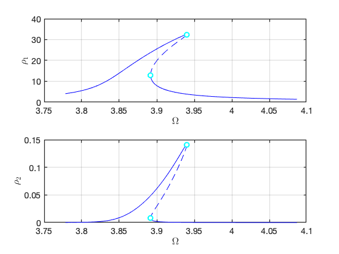 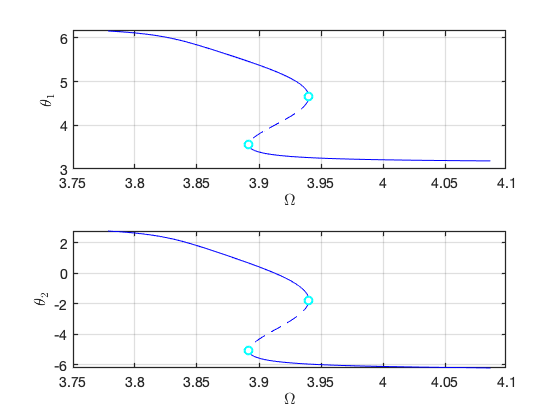 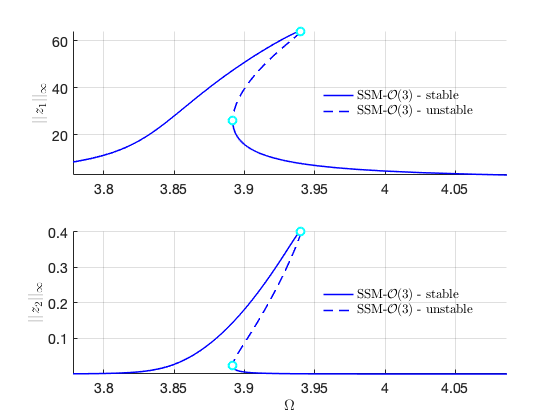 Verification
Load Nayfeh's solution for comparison
Nayfeh1 = load('NayfehFirstMode'); om1 = 3.8553; omsamp = om1*(1+Nayfeh1.epsilon*Nayfeh1.SIG2); figure(gcf); hold on subplot(2,1,1) plot(omsamp(1:100:end),Nayfeh1.A1(1:100:end),'ro','DisplayName','Nayfeh'); subplot(2,1,2) plot(omsamp(1:100:end),Nayfeh1.A2(1:100:end),'ro','DisplayName','Nayfeh');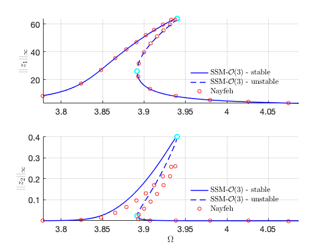
Verification using COCO The following run uses the po-toolbox of COCO to calculate the forced reponse curve of the full system with collocation methods. It can take more than 10 minutes to finish.
nCycles = 500; coco = cocoWrapper(DS, nCycles, outdof); set(coco.Options, 'PtMX', 1000, 'NTST',20, 'dir_name', 'bd1'); set(coco.Options, 'NAdapt', 1, 'h_max', 200, 'MaxRes', 1); coco.initialGuess = 'linear'; start = tic; bd1 = coco.extract_FRC(freqrange); timings.cocoFRCbd1 = toc(start)
Run='bd1.FRC': Continue primary family of periodic orbits.
STEP DAMPING NORMS COMPUTATION TIMES
IT SIT GAMMA ||d|| ||f|| ||U|| F(x) DF(x) SOLVE
0 1.19e-01 2.33e+02 0.0 0.0 0.0
1 1 1.00e+00 5.77e-02 1.08e-05 2.33e+02 0.0 0.6 0.2
2 1 1.00e+00 2.21e-04 4.30e-12 2.33e+02 0.0 1.3 0.2
3 1 1.00e+00 5.04e-10 6.73e-14 2.33e+02 0.1 1.8 0.3
STEP TIME ||U|| LABEL TYPE omega po.period eps amp1 amp2
0 00:00:06 2.3281e+02 1 EP 3.7796e+00 1.6624e+00 1.0000e+00 8.4151e+00 6.5931e-04
6 00:00:43 2.7340e+02 2 EP 3.7782e+00 1.6630e+00 1.0000e+00 8.2760e+00 6.2617e-04
STEP TIME ||U|| LABEL TYPE omega po.period eps amp1 amp2
0 00:00:44 2.3281e+02 3 EP 3.7796e+00 1.6624e+00 1.0000e+00 8.4151e+00 6.5931e-04
10 00:01:46 3.6802e+02 4 3.7952e+00 1.6556e+00 1.0000e+00 1.0351e+01 1.2579e-03
20 00:04:23 1.4273e+03 5 3.8635e+00 1.6263e+00 1.0000e+00 3.4591e+01 5.2579e-02
30 00:07:12 2.3385e+03 6 3.9045e+00 1.6092e+00 1.0000e+00 5.2987e+01 2.0194e-01
40 00:10:02 2.9303e+03 7 3.9309e+00 1.5984e+00 1.0000e+00 6.2494e+01 3.4763e-01
47 00:13:00 2.9782e+03 8 SN 3.9359e+00 1.5964e+00 1.0000e+00 6.3483e+01 3.6857e-01
50 00:13:55 2.9190e+03 9 3.9343e+00 1.5970e+00 1.0000e+00 6.2222e+01 3.4662e-01
60 00:17:05 2.4463e+03 10 3.9166e+00 1.6043e+00 1.0000e+00 5.2119e+01 1.9859e-01
70 00:20:05 1.5669e+03 11 3.8940e+00 1.6135e+00 1.0000e+00 3.3211e+01 5.0002e-02
73 00:21:47 1.2078e+03 12 SN 3.8916e+00 1.6146e+00 1.0000e+00 2.6025e+01 2.4107e-02
80 00:23:59 2.9137e+02 13 3.9467e+00 1.5920e+00 1.0000e+00 7.0449e+00 5.6747e-04
82 00:24:34 1.1350e+02 14 EP 4.0866e+00 1.5375e+00 1.0000e+00 2.7207e+00 7.5464e-05
Computation time:
SSM based computation: FRC_ep1: 34.1298
Full system analysis: cocoFRCbd1: 1.4807e+03
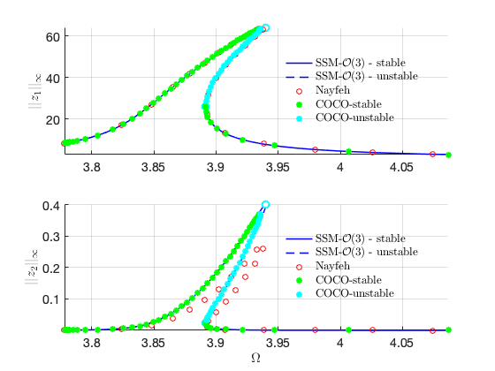 Other modes
Nonzero forcing at other modes 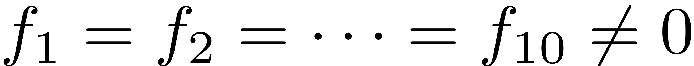 Next we consider the case that all the ten modes are excited externally. The method of multiple scale produces the same results as before given only 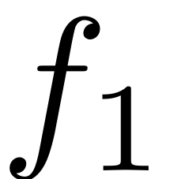 is involved in the secular equation for the method of multiple scale. In contrast, the SSM reduction captures well the contribution of 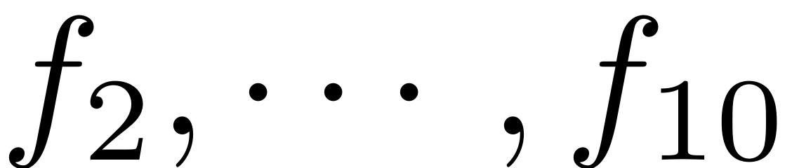. In particular, the method of multiple scale predictes that the 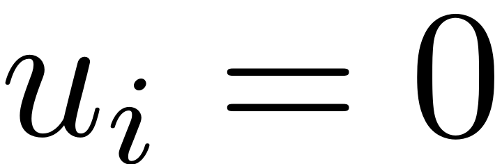 for 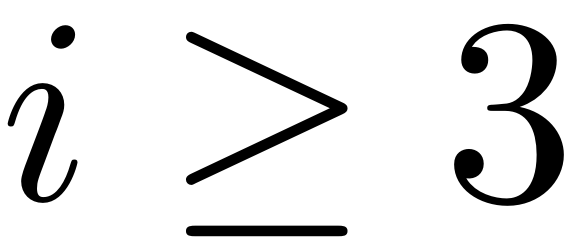, independently of the value of .
Fext = zeros(n,1)+f; % excitation at modal coordinate [~,~,~,~,fext2] = build_model(c,Fext,epsilon,n); coeffs = [fext2 fext2]/2; DS.add_forcing(coeffs, kappas); outdof2 = [2 3] start = tic; FRC_ep2 = S.SSM_isol2ep('isolAllf',resonant_modes, order, [1 3], 'freq', freqrange,outdof2); timings.FRC_ep2 = toc(start)
Getting nonlinearity coefficients
Loaded coefficients from storage
outdof2 =
2 3
The master subspace contains the following eigenvalues
lambda1 == - 0.01 + 3.8553i
lambda2 == (-0.01) - 3.8553i
lambda3 == - 0.01 + 12.4927i
lambda4 == (-0.01) - 12.4927i
sigma_out = 1
sigma_in = 1
Manifold computation time at order 2 = 00:00:00
Estimated memory usage at order 2 = 7.03E-02 MB
Manifold computation time at order 3 = 00:00:00
Estimated memory usage at order 3 = 1.03E-01 MB
Run='isolAllf.ep': Continue equilibria along primary branch.
STEP DAMPING NORMS COMPUTATION TIMES
IT SIT GAMMA ||d|| ||f|| ||U|| F(x) DF(x) SOLVE
0 6.25e-01 2.38e+01 0.0 0.0 0.0
1 1 5.09e-01 1.26e+00 1.04e-01 2.38e+01 0.0 0.0 0.0
2 1 1.00e+00 3.85e-01 1.81e-02 2.38e+01 0.0 0.0 0.0
3 1 1.00e+00 8.11e-03 3.47e-04 2.38e+01 0.0 0.0 0.0
4 1 1.00e+00 7.84e-06 1.28e-07 2.38e+01 0.0 0.0 0.0
5 1 1.00e+00 3.01e-09 1.80e-14 2.38e+01 0.0 0.0 0.0
STEP TIME ||U|| LABEL TYPE om rho1 rho2 th1 th2 eps
0 00:00:00 2.3797e+01 1 EP 3.8551e+00 1.5213e+01 1.1521e-02 5.7948e+00 1.6658e+00 1.0000e+00
10 00:00:00 2.0250e+01 2 3.8431e+00 1.2295e+01 5.8889e-03 5.8943e+00 1.9645e+00 1.0000e+00
20 00:00:01 1.6348e+01 3 3.8260e+00 8.7778e+00 2.0455e-03 6.0090e+00 2.3093e+00 1.0000e+00
30 00:00:01 1.3193e+01 4 3.7967e+00 5.2600e+00 4.0649e-04 6.1202e+00 2.6437e+00 1.0000e+00
34 00:00:02 1.2414e+01 5 EP 3.7782e+00 4.0992e+00 1.8330e-04 6.1564e+00 2.7527e+00 1.0000e+00
STEP TIME ||U|| LABEL TYPE om rho1 rho2 th1 th2 eps
0 00:00:02 2.3797e+01 6 EP 3.8551e+00 1.5213e+01 1.1521e-02 5.7948e+00 1.6658e+00 1.0000e+00
10 00:00:02 2.7507e+01 7 3.8670e+00 1.8129e+01 2.0117e-02 5.6898e+00 1.3506e+00 1.0000e+00
20 00:00:03 3.2108e+01 8 3.8819e+00 2.1638e+01 3.5585e-02 5.5525e+00 9.3816e-01 1.0000e+00
30 00:00:03 3.6796e+01 9 3.8981e+00 2.5138e+01 5.8302e-02 5.3959e+00 4.6782e-01 1.0000e+00
40 00:00:04 4.1520e+01 10 3.9159e+00 2.8619e+01 9.0463e-02 5.2015e+00 -1.1610e-01 1.0000e+00
50 00:00:05 4.6135e+01 11 3.9360e+00 3.1988e+01 1.3416e-01 4.8752e+00 -1.0956e+00 1.0000e+00
60 00:00:05 4.6725e+01 12 3.9399e+00 3.2417e+01 1.4147e-01 4.7092e+00 -1.5940e+00 1.0000e+00
67 00:00:06 4.6646e+01 13 FP 3.9402e+00 3.2359e+01 1.4092e-01 4.6528e+00 -1.7631e+00 1.0000e+00
67 00:00:06 4.6646e+01 14 SN 3.9402e+00 3.2359e+01 1.4092e-01 4.6528e+00 -1.7631e+00 1.0000e+00
70 00:00:06 4.6515e+01 15 3.9401e+00 3.2264e+01 1.3969e-01 4.6153e+00 -1.8754e+00 1.0000e+00
80 00:00:06 4.3804e+01 16 3.9330e+00 3.0287e+01 1.1356e-01 4.3478e+00 -2.6778e+00 1.0000e+00
90 00:00:07 3.9090e+01 17 3.9201e+00 2.6830e+01 7.6346e-02 4.1163e+00 -3.3717e+00 1.0000e+00
100 00:00:07 3.4381e+01 18 3.9088e+00 2.3336e+01 4.8855e-02 3.9451e+00 -3.8852e+00 1.0000e+00
110 00:00:07 2.9735e+01 19 3.8999e+00 1.9831e+01 2.9372e-02 3.7997e+00 -4.3210e+00 1.0000e+00
120 00:00:08 2.5206e+01 20 3.8939e+00 1.6320e+01 1.6181e-02 3.6691e+00 -4.7129e+00 1.0000e+00
130 00:00:08 2.1112e+01 21 SN 3.8918e+00 1.3000e+01 8.1785e-03 3.5541e+00 -5.0576e+00 1.0000e+00
130 00:00:08 2.1112e+01 22 FP 3.8918e+00 1.3000e+01 8.1785e-03 3.5541e+00 -5.0576e+00 1.0000e+00
130 00:00:08 2.0879e+01 23 3.8918e+00 1.2805e+01 7.8198e-03 3.5476e+00 -5.0773e+00 1.0000e+00
140 00:00:09 1.6920e+01 24 3.8957e+00 9.2883e+00 3.0468e-03 3.4321e+00 -5.4239e+00 1.0000e+00
150 00:00:09 1.3661e+01 25 3.9133e+00 5.7706e+00 7.8504e-04 3.3205e+00 -5.7596e+00 1.0000e+00
160 00:00:09 1.1750e+01 26 3.9992e+00 2.2541e+00 7.1304e-05 3.2112e+00 -6.0946e+00 1.0000e+00
163 00:00:09 1.1636e+01 27 EP 4.0866e+00 1.4013e+00 3.6412e-05 3.1848e+00 -6.1964e+00 1.0000e+00
the forcing frequency 3.7782e+00 is nearly resonant with the eigenvalue -1.0000e-02 + i3.8553e+00
the forcing frequency 3.7803e+00 is nearly resonant with the eigenvalue -1.0000e-02 + i3.8553e+00
the forcing frequency 3.7865e+00 is nearly resonant with the eigenvalue -1.0000e-02 + i3.8553e+00
.
.
.
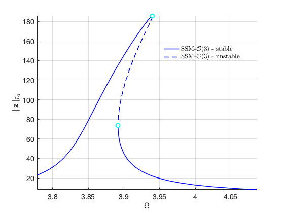 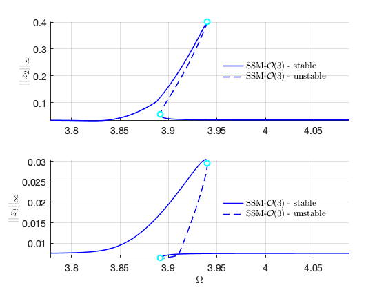 Verification using COCO
The following run uses the po-toolbox of COCO to calculate the forced reponser curve of the full system with collocation methods. It can take more than 10 minutes to finish.
coco = cocoWrapper(DS, nCycles, outdof2); set(coco.Options, 'PtMX', 1000, 'NTST',20, 'dir_name', 'bd2'); set(coco.Options, 'NAdapt', 1, 'h_max', 200, 'MaxRes', 1); coco.initialGuess = 'linear'; start = tic; bd2 = coco.extract_FRC(freqrange); timings.cocoFRCbd2 = toc(start)
Run='bd2.FRC': Continue primary family of periodic orbits.
STEP DAMPING NORMS COMPUTATION TIMES
IT SIT GAMMA ||d|| ||f|| ||U|| F(x) DF(x) SOLVE
0 1.19e-01 2.33e+02 0.0 0.0 0.0
1 1 1.00e+00 5.85e-02 1.11e-05 2.33e+02 0.0 0.4 0.0
2 1 1.00e+00 2.16e-04 4.57e-12 2.33e+02 0.1 0.7 0.1
3 1 1.00e+00 4.79e-10 7.64e-14 2.33e+02 0.1 1.1 0.1
STEP TIME ||U|| LABEL TYPE omega po.period eps amp2 amp3
0 00:00:06 2.3281e+02 1 EP 3.7796e+00 1.6624e+00 1.0000e+00 3.4609e-02 7.5810e-03
6 00:00:45 2.7338e+02 2 EP 3.7782e+00 1.6630e+00 1.0000e+00 3.4638e-02 7.5780e-03
STEP TIME ||U|| LABEL TYPE omega po.period eps amp2 amp3
0 00:00:46 2.3281e+02 3 EP 3.7796e+00 1.6624e+00 1.0000e+00 3.4609e-02 7.5810e-03
10 00:01:58 3.6802e+02 4 3.7952e+00 1.6556e+00 1.0000e+00 3.4109e-02 7.6342e-03
20 00:04:05 1.4265e+03 5 3.8635e+00 1.6263e+00 1.0000e+00 5.8904e-02 1.1201e-02
30 00:07:01 2.3358e+03 6 3.9044e+00 1.6093e+00 1.0000e+00 1.8257e-01 2.0652e-02
40 00:10:17 2.9264e+03 7 3.9307e+00 1.5985e+00 1.0000e+00 3.3978e-01 2.8199e-02
47 00:13:25 2.9742e+03 8 SN 3.9357e+00 1.5965e+00 1.0000e+00 3.6912e-01 2.7578e-02
50 00:14:06 2.9152e+03 9 3.9341e+00 1.5971e+00 1.0000e+00 3.5225e-01 2.4876e-02
60 00:16:42 2.4434e+03 10 3.9164e+00 1.6043e+00 1.0000e+00 2.1776e-01 1.1419e-02
70 00:19:07 1.5659e+03 11 3.8940e+00 1.6136e+00 1.0000e+00 8.0222e-02 6.3764e-03
73 00:20:25 1.2081e+03 12 SN 3.8916e+00 1.6146e+00 1.0000e+00 5.6789e-02 6.4652e-03
80 00:22:01 2.9151e+02 13 3.9467e+00 1.5920e+00 1.0000e+00 3.6105e-02 7.4960e-03
82 00:22:29 1.1351e+02 14 EP 4.0866e+00 1.5375e+00 1.0000e+00 3.5941e-02 7.5450e-03
Computation time:
SSM based computation: FRC_ep1: 34.1298
Full system analysis: cocoFRCbd1: 1.4807e+03
SSM based computation: FRC_ep1: 18.0423
Full system analysis: cocoFRCbd1: 1.3572e+03
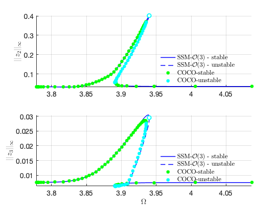 Primary resonance of the second mode
We move to the case that 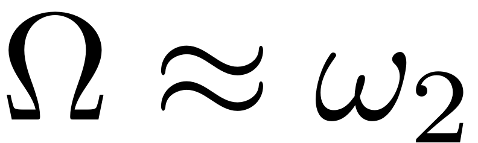. Due to the internal resonance, there are two solution branches: one with trivial response for the first mode, and the other with nontrivial response for the first mode. In particular, the response of the system can be dominated by the contribution of the first mode due to the nontrivial branch.
We set 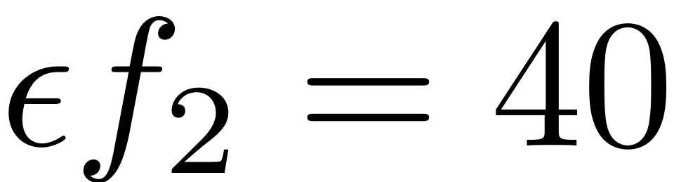 and 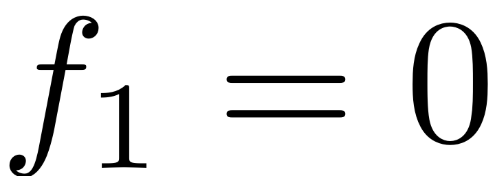, 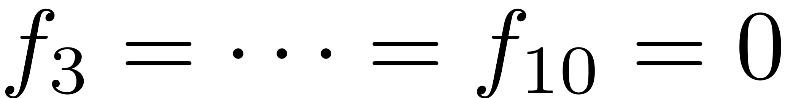.
c = 10; f = 40/epsilon; n = 10; % number of modes Fext = zeros(n,1); % excitation at modal coordinate Fext(2) = f; [mass,damp,stiff,fnl,fext] = build_model(c,Fext,epsilon,n); % Create dynamical system % DS = DynamicalSystem(); set(DS,'M',mass,'C',damp,'K',stiff,'fnl',fnl); set(DS.Options,'Emax',5,'Nmax',10,'notation','multiindex') % Forcing kappas = [-1; 1]; coeffs = [fext fext]/2; DS.add_forcing(coeffs, kappas);
Getting nonlinearity coefficients Loaded coefficients from storage
Linear Modal analysis
[V,D,W] = DS.linear_spectral_analysis();
Due to high-dimensionality, we compute only the first 5 eigenvalues with the smallest magnitude. These would also be used to compute the spectral quotients Assuming a proportional damping hypthesis with symmetric matrices modal damping ratio for 1 mode is 2.593810e-04 modal damping ratio for 2 mode is 8.004681e-05 modal damping ratio for 3 mode is 3.837148e-05 modal damping ratio for 4 mode is 2.243713e-05 modal damping ratio for 5 mode is 1.470421e-05 The first 10 nonzero eigenvalues are given as -0.0010 + 3.8553i -0.0010 - 3.8553i -0.0010 +12.4927i -0.0010 -12.4927i -0.0010 +26.0610i -0.0010 -26.0610i -0.0010 +44.5690i -0.0010 -44.5690i -0.0010 +68.0077i -0.0010 -68.0077i
Choose Master subspace (perform resonance analysis)
S = SSM(DS); set(S.Options, 'reltol', 1.0,'notation','multiindex'); resonant_modes = [1 2 3 4]; order = 3; outdof = [1 2]; freqrange = [0.94 1.12]*imag(D(3)); set(S.FRCOptions, 'omegaSampStyle', 'cocoBD'); set(S.contOptions, 'h_max', 5, 'PtMX', 250); set(S.FRCOptions, 'initialSolver', 'fsolve'); set(S.FRCOptions, 'coordinates', 'cartesian');
Non-zero 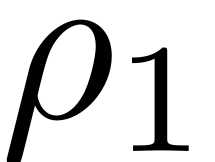 (reproduce Nayfehs' solutions to get initial guess)
p0 = [imag(D(3));1]; z0 = [97.8562 -55.4066 1.9095 0.9820]'*1e3; start = tic; FRC_ep21 = S.SSM_isol2ep('isol2',resonant_modes, order, [1/3 1], 'freq', freqrange,outdof,{p0,z0}); timings.FRC_ep21 = toc(start)
The master subspace contains the following eigenvalues
lambda1 == - 0.001 + 3.8553i
lambda2 == (-0.001) - 3.8553i
lambda3 == - 0.001 + 12.4927i
lambda4 == (-0.001) - 12.4927i
sigma_out = 1
sigma_in = 1
Manifold computation time at order 2 = 00:00:00
Estimated memory usage at order 2 = 7.03E-02 MB
Manifold computation time at order 3 = 00:00:00
Estimated memory usage at order 3 = 1.03E-01 MB
Equation solved.
fsolve completed because the vector of function values is near zero
as measured by the value of the function tolerance, and
the problem appears regular as measured by the gradient.
Run='isol2.ep': Continue equilibria along primary branch.
STEP DAMPING NORMS COMPUTATION TIMES
IT SIT GAMMA ||d|| ||f|| ||U|| F(x) DF(x) SOLVE
0 3.33e-13 9.02e+01 0.0 0.0 0.0
STEP TIME ||U|| LABEL TYPE om Rez1 Rez2 Imz1 Imz2 eps
0 00:00:00 9.0188e+01 1 EP 1.2493e+01 2.7697e+01 5.7009e+00 -5.5771e+01 -5.3928e-01 1.0000e+00
10 00:00:00 7.1097e+01 2 1.2134e+01 1.7613e+01 2.1627e+00 -4.5439e+01 -3.1117e-01 1.0000e+00
20 00:00:01 4.7482e+01 3 FP 1.1805e+01 3.6240e-02 1.0623e+00 -3.1405e+01 -1.2818e-01 1.0000e+00
20 00:00:01 4.7482e+01 4 SN 1.1805e+01 3.6239e-02 1.0623e+00 -3.1405e+01 -1.2818e-01 1.0000e+00
20 00:00:01 4.7482e+01 5 1.1805e+01 3.3801e-02 1.0623e+00 -3.1405e+01 -1.2818e-01 1.0000e+00
30 00:00:01 5.2813e+01 6 1.1871e+01 -6.9363e+00 1.0265e+00 -3.4698e+01 -1.6226e-01 1.0000e+00
40 00:00:01 9.5542e+01 7 1.2627e+01 -3.1241e+01 -6.1356e-01 -5.8545e+01 -5.6677e-01 1.0000e+00
50 00:00:02 1.0318e+02 8 1.2789e+01 -3.4963e+01 -5.9400e+00 -6.2460e+01 -7.0314e-01 1.0000e+00
60 00:00:02 1.0816e+02 9 1.3025e+01 -3.4834e+01 -2.4519e+01 -6.2149e+01 -1.4058e+00 1.0000e+00
70 00:00:02 1.0509e+02 10 1.3340e+01 -2.9084e+01 -4.1800e+01 -5.2375e+01 -2.6528e+00 1.0000e+00
80 00:00:03 9.2431e+01 11 1.3632e+01 -1.5476e+01 -5.5229e+01 -2.7928e+01 -3.9612e+00 1.0000e+00
84 00:00:03 8.7811e+01 12 SN 1.3653e+01 -1.0121e+01 -5.6748e+01 -1.8138e+01 -4.0995e+00 1.0000e+00
84 00:00:03 8.7811e+01 13 FP 1.3653e+01 -1.0121e+01 -5.6748e+01 -1.8138e+01 -4.0995e+00 1.0000e+00
90 00:00:04 8.1284e+01 14 1.3583e+01 4.4564e-01 -5.5693e+01 1.2440e+00 -3.8940e+00 1.0000e+00
100 00:00:04 8.2113e+01 15 1.3281e+01 1.6526e+01 -4.4549e+01 3.0491e+01 -2.6426e+00 1.0000e+00
110 00:00:05 9.5052e+01 16 1.3023e+01 2.9096e+01 -2.5635e+01 5.3309e+01 -1.2971e+00 1.0000e+00
113 00:00:05 9.9178e+01 17 FP 1.3008e+01 3.1396e+01 -2.0606e+01 5.7767e+01 -1.0874e+00 1.0000e+00
113 00:00:05 9.9179e+01 18 SN 1.3008e+01 3.1396e+01 -2.0605e+01 5.7767e+01 -1.0874e+00 1.0000e+00
120 00:00:05 1.1288e+02 19 1.3167e+01 3.5886e+01 -9.4725e+00 6.9414e+01 -8.9780e-01 1.0000e+00
129 00:00:06 1.4165e+02 20 EP 1.3992e+01 3.8688e+01 -4.2808e+00 9.1210e+01 -1.2864e+00 1.0000e+00
STEP TIME ||U|| LABEL TYPE om Rez1 Rez2 Imz1 Imz2 eps
0 00:00:06 9.0188e+01 21 EP 1.2493e+01 2.7697e+01 5.7009e+00 -5.5771e+01 -5.3928e-01 1.0000e+00
10 00:00:06 9.7976e+01 22 1.2669e+01 3.1386e+01 1.0611e+01 -5.9502e+01 -7.2290e-01 1.0000e+00
20 00:00:06 1.0462e+02 23 1.2942e+01 3.2764e+01 2.4662e+01 -6.0175e+01 -1.3654e+00 1.0000e+00
30 00:00:06 1.0134e+02 24 1.3345e+01 2.6042e+01 4.4403e+01 -4.7942e+01 -2.8558e+00 1.0000e+00
40 00:00:07 8.7514e+01 25 1.3589e+01 1.0846e+01 5.5677e+01 -2.0272e+01 -3.9602e+00 1.0000e+00
41 00:00:07 8.6439e+01 26 FP 1.3590e+01 9.5210e+00 5.5908e+01 -1.7845e+01 -3.9772e+00 1.0000e+00
41 00:00:07 8.6439e+01 27 SN 1.3590e+01 9.5210e+00 5.5908e+01 -1.7845e+01 -3.9772e+00 1.0000e+00
50 00:00:08 7.8631e+01 28 1.3442e+01 -5.9668e+00 5.2474e+01 1.0442e+01 -3.4735e+00 1.0000e+00
60 00:00:08 8.3883e+01 29 1.3096e+01 -2.1522e+01 3.7621e+01 3.8257e+01 -2.0208e+00 1.0000e+00
70 00:00:08 9.7007e+01 30 1.2876e+01 -3.2181e+01 1.6800e+01 5.6747e+01 -9.0055e-01 1.0000e+00
72 00:00:09 9.9243e+01 31 FP 1.2870e+01 -3.3367e+01 1.3361e+01 5.8872e+01 -8.1231e-01 1.0000e+00
72 00:00:09 9.9244e+01 32 SN 1.2870e+01 -3.3368e+01 1.3358e+01 5.8873e+01 -8.1226e-01 1.0000e+00
80 00:00:09 1.0945e+02 33 1.3012e+01 -3.6416e+01 4.3993e+00 6.6888e+01 -7.7030e-01 1.0000e+00
85 00:00:10 1.1732e+02 34 HB 1.3216e+01 -3.7452e+01 3.1736e+00 7.2756e+01 -8.7405e-01 1.0000e+00
90 00:00:10 1.4224e+02 35 EP 1.3992e+01 -3.9032e+01 2.4413e+00 9.1588e+01 -1.2833e+00 1.0000e+00
the forcing frequency 1.3992e+01 is nearly resonant with the eigenvalue -1.0000e-03 + i1.2493e+01
the forcing frequency 1.3916e+01 is nearly resonant with the eigenvalue -1.0000e-03 + i1.2493e+01
the forcing frequency 1.3782e+01 is nearly resonant with the eigenvalue -1.0000e-03 + i1.2493e+01
.
.
.
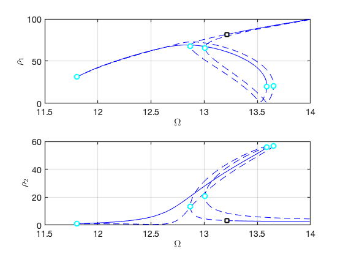 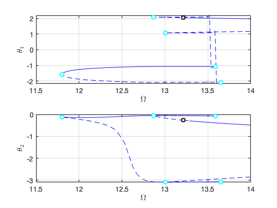 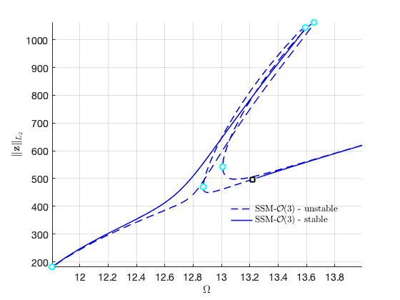 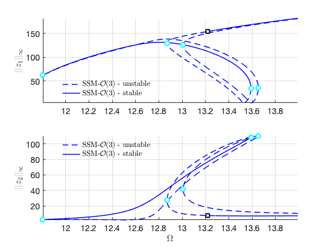 Load Nayfeh's solution for comparison
Nayfeh21 = load('NayfehSecondModeA1Nequal0.mat'); om2 = 12.4927; omsamp = om2*(1+1e-4*Nayfeh21.SIG2); figure(gcf); hold on subplot(2,1,1) plot(omsamp(1:150:end),Nayfeh21.A1(1:150:end),'ro','DisplayName','Nayfeh'); subplot(2,1,2) plot(omsamp(1:150:end),Nayfeh21.A2(1:150:end),'ro','DisplayName','Nayfeh');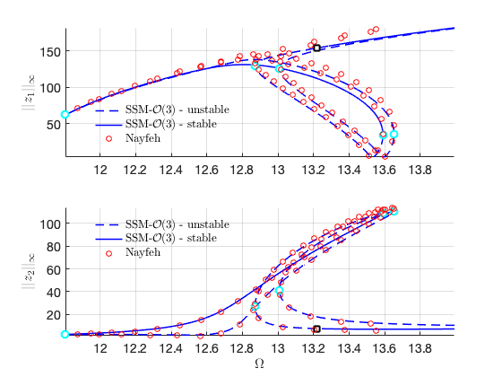
Zero upper branch
start = tic; FRC_ep22 = S.SSM_isol2ep('isol3',resonant_modes, order, [1/3 1], 'freq', freqrange,outdof); timings.FRC_ep22 = toc(start)
The master subspace contains the following eigenvalues
lambda1 == - 0.001 + 3.8553i
lambda2 == (-0.001) - 3.8553i
lambda3 == - 0.001 + 12.4927i
lambda4 == (-0.001) - 12.4927i
sigma_out = 1
sigma_in = 1
Manifold computation time at order 2 = 00:00:00
Estimated memory usage at order 2 = 7.03E-02 MB
Manifold computation time at order 3 = 00:00:00
Estimated memory usage at order 3 = 1.03E-01 MB
Equation solved.
fsolve completed because the vector of function values is near zero
as measured by the value of the function tolerance, and
the problem appears regular as measured by the gradient.
Run='isol3.ep': Continue equilibria along primary branch.
STEP DAMPING NORMS COMPUTATION TIMES
IT SIT GAMMA ||d|| ||f|| ||U|| F(x) DF(x) SOLVE
0 6.01e-13 2.58e+01 0.0 0.0 0.0
STEP TIME ||U|| LABEL TYPE om Rez1 Rez2 Imz1 Imz2 eps
0 00:00:00 2.5757e+01 1 EP 1.2493e+01 0.0000e+00 1.3233e+01 0.0000e+00 -2.1882e-01 1.0000e+00
10 00:00:00 1.7408e+01 2 1.2111e+01 0.0000e+00 2.0865e+00 0.0000e+00 -5.4386e-03 1.0000e+00
13 00:00:00 1.6706e+01 3 EP 1.1743e+01 0.0000e+00 1.0674e+00 0.0000e+00 -1.4232e-03 1.0000e+00
STEP TIME ||U|| LABEL TYPE om Rez1 Rez2 Imz1 Imz2 eps
0 00:00:00 2.5757e+01 4 EP 1.2493e+01 0.0000e+00 1.3233e+01 0.0000e+00 -2.1882e-01 1.0000e+00
10 00:00:01 4.6394e+01 5 1.2781e+01 0.0000e+00 3.0183e+01 0.0000e+00 -1.1397e+00 1.0000e+00
20 00:00:01 7.3740e+01 6 1.3354e+01 0.0000e+00 5.0298e+01 0.0000e+00 -3.1731e+00 1.0000e+00
30 00:00:01 9.5637e+01 7 EP 1.3992e+01 0.0000e+00 6.5932e+01 0.0000e+00 -5.4679e+00 1.0000e+00
the forcing frequency 1.1743e+01 is nearly resonant with the eigenvalue -1.0000e-03 + i1.2493e+01
the forcing frequency 1.1771e+01 is nearly resonant with the eigenvalue -1.0000e-03 + i1.2493e+01
the forcing frequency 1.1924e+01 is nearly resonant with the eigenvalue -1.0000e-03 + i1.2493e+01
.
.
.
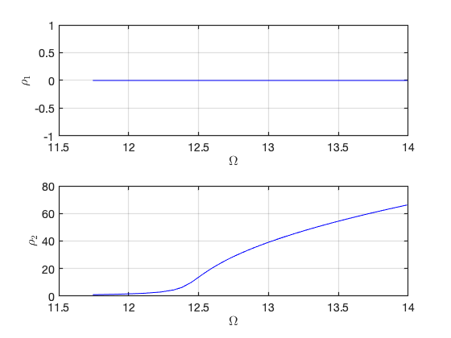 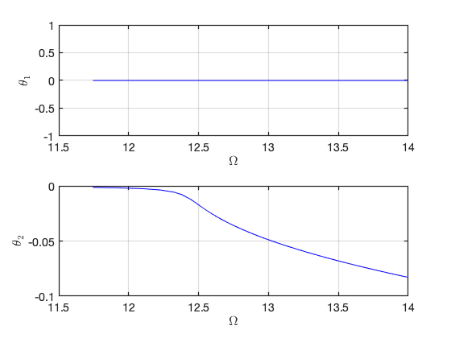 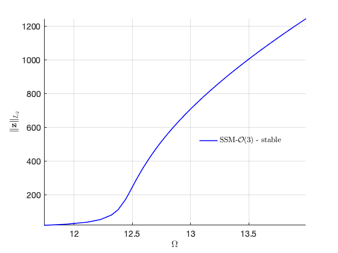 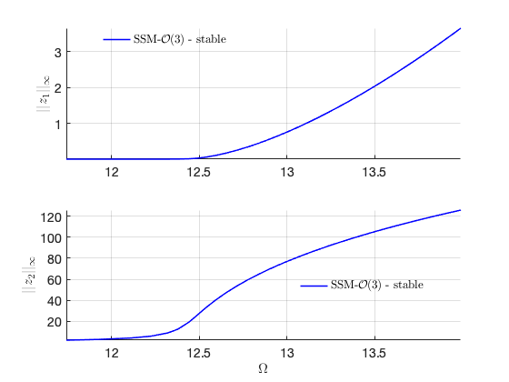 Zero lower branch
The fold point is outside the frequency span. So we calculate the lower branch directly with provided initial solution.
p0 = [1.06*imag(D(3));1]; z0 = [0 0 1 1]'; start = tic; FRC_ep23 = S.SSM_isol2ep('isol4',resonant_modes, order, [1/3 1], 'freq',freqrange,outdof,{p0,z0}); timings.FRC_ep23 = toc(start)
The master subspace contains the following eigenvalues
lambda1 == - 0.001 + 3.8553i
lambda2 == (-0.001) - 3.8553i
lambda3 == - 0.001 + 12.4927i
lambda4 == (-0.001) - 12.4927i
sigma_out = 1
sigma_in = 1
Manifold computation time at order 2 = 00:00:00
Estimated memory usage at order 2 = 7.03E-02 MB
Manifold computation time at order 3 = 00:00:00
Estimated memory usage at order 3 = 1.03E-01 MB
Equation solved.
fsolve completed because the vector of function values is near zero
as measured by the value of the function tolerance, and
the problem appears regular as measured by the gradient.
Run='isol4.ep': Continue equilibria along primary branch.
STEP DAMPING NORMS COMPUTATION TIMES
IT SIT GAMMA ||d|| ||f|| ||U|| F(x) DF(x) SOLVE
0 1.55e-15 1.88e+01 0.0 0.0 0.0
STEP TIME ||U|| LABEL TYPE om Rez1 Rez2 Imz1 Imz2 eps
0 00:00:00 1.8815e+01 1 EP 1.3242e+01 0.0000e+00 -1.0685e+00 0.0000e+00 -1.4262e-03 1.0000e+00
10 00:00:00 1.8995e+01 2 1.2683e+01 0.0000e+00 -4.3654e+00 0.0000e+00 -2.3808e-02 1.0000e+00
14 00:00:00 2.3222e+01 3 FP 1.2607e+01 0.0000e+00 -1.0497e+01 0.0000e+00 -1.3767e-01 1.0000e+00
14 00:00:00 2.3229e+01 4 SN 1.2607e+01 0.0000e+00 -1.0504e+01 0.0000e+00 -1.3786e-01 1.0000e+00
20 00:00:01 4.2333e+01 5 1.2775e+01 0.0000e+00 -2.7046e+01 0.0000e+00 -9.1490e-01 1.0000e+00
30 00:00:01 6.9100e+01 6 1.3273e+01 0.0000e+00 -4.6937e+01 0.0000e+00 -2.7618e+00 1.0000e+00
40 00:00:01 9.1344e+01 7 1.3879e+01 0.0000e+00 -6.2881e+01 0.0000e+00 -4.9705e+00 1.0000e+00
42 00:00:01 9.4900e+01 8 EP 1.3992e+01 0.0000e+00 -6.5405e+01 0.0000e+00 -5.3803e+00 1.0000e+00
STEP TIME ||U|| LABEL TYPE om Rez1 Rez2 Imz1 Imz2 eps
0 00:00:01 1.8815e+01 9 EP 1.3242e+01 0.0000e+00 -1.0685e+00 0.0000e+00 -1.4262e-03 1.0000e+00
9 00:00:02 1.9827e+01 10 EP 1.3992e+01 0.0000e+00 -5.3399e-01 0.0000e+00 -3.5623e-04 1.0000e+00
the forcing frequency 1.3992e+01 is nearly resonant with the eigenvalue -1.0000e-03 + i1.2493e+01
the forcing frequency 1.3945e+01 is nearly resonant with the eigenvalue -1.0000e-03 + i1.2493e+01
the forcing frequency 1.3879e+01 is nearly resonant with the eigenvalue -1.0000e-03 + i1.2493e+01
.
.
.
Computation time:
SSM based computation: FRC_ep1: 34.1298
Full system analysis: cocoFRCbd1: 1.4807e+03
SSM based computation: FRC_ep1: 18.0423
Full system analysis: cocoFRCbd1: 1.3572e+03
SSM based computation: FRC_ep21: 17.8259
SSM based computation: FRC_ep22: 4.6606
SSM based computation: FRC_ep23: 4.7044
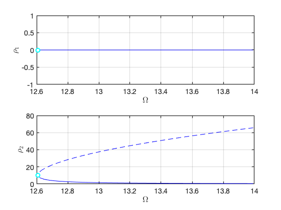 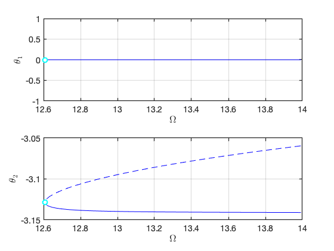 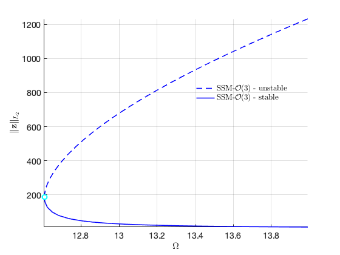 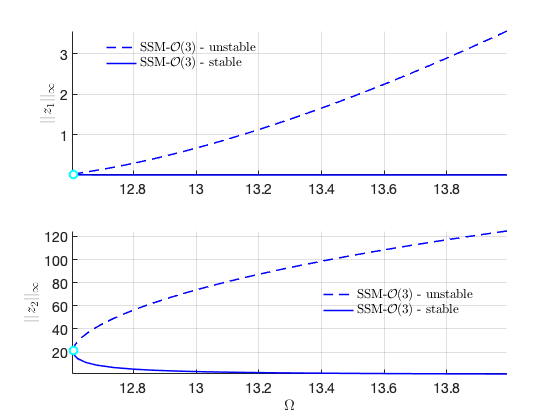 Plot the two branches in the same figure Here we have nonzero 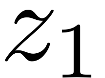 or 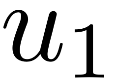 in the equation of motion although 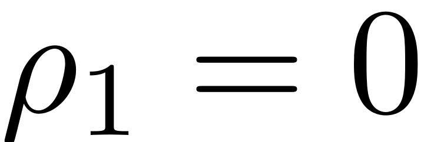 due to the nonlinear mapping of SSM. In contrast, the method of multiple scale predcites that 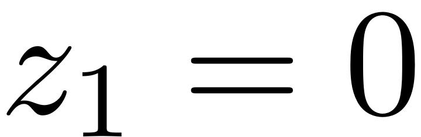.
ST = cell(2,1);
ST{1} = {'b--','LineWidth',1.0}; % unstable
ST{2} = {'b-','LineWidth',1.0}; % stable
legs = 'SSM-$\mathcal{O}(3)$-unstable';
legu = 'SSM-$\mathcal{O}(3)$-stable';
figure;
subplot(2,1,1); hold on
plot_stab_lines(FRC_ep22.om,FRC_ep22.Aout_frc(:,1),FRC_ep22.st,ST);
plot_stab_lines(FRC_ep23.om,FRC_ep23.Aout_frc(:,1),FRC_ep23.st,ST,legs,legu);
xlabel('$\Omega$','Interpreter','latex');
ylabel('$||z_1||_{\infty}$','Interpreter','latex');
grid on; axis tight;set(gca,'FontSize',16)
subplot(2,1,2); hold on
plot_stab_lines(FRC_ep22.om,FRC_ep22.Aout_frc(:,2),FRC_ep22.st,ST);
plot_stab_lines(FRC_ep23.om,FRC_ep23.Aout_frc(:,2),FRC_ep23.st,ST);
xlabel('$\Omega$','Interpreter','latex');
ylabel('$||z_2||_{\infty}$','Interpreter','latex');
grid on; axis tight;set(gca,'FontSize',16)
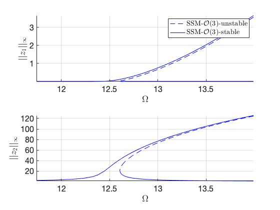 Load Nayfeh's solution for comparison
Nayfeh21 = load('NayfehSecondModeA1equal0.mat'); om2 = 12.4927; omsamp = om2*(1+Nayfeh21.epsilon*Nayfeh21.Sig2); figure(gcf); hold on subplot(2,1,2) plot(omsamp(1:100:end),Nayfeh21.A2(1:100:end),'ro','DisplayName','Nayfeh');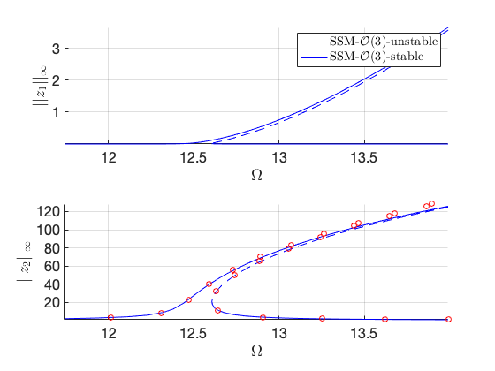